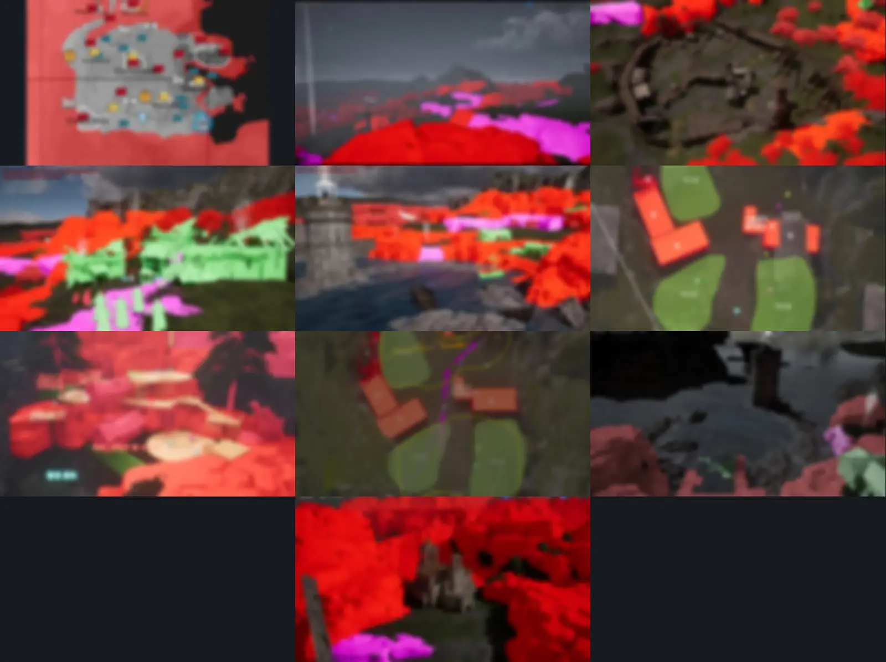

담당
리뉴얼 전 세트 재제작 · 세력 은신처 · 점령된 구역 담당
구분
필드 지역 · 챕터 3.3 · 2023–2024
작업 과정
평면도와 목업 — 회사 대외비 자료라 형태만 남기고 되돌릴 수 없게 흐리게 처리했습니다.

완성 화면
완성 화면 — 성채와 채석장, 항구마을, 숙영지 일대.
필드 지역 · 출시
필드 지역 · 챕터 3.3 · 2023–2024·출시
초기 제작 후 리뉴얼이 결정되어 설계부터 목업까지 전 세트를 다시 제작. 이후 점령된 구역(2024)과 소형 콘텐츠 배치(2026)까지 담당했습니다. 2025년 6월 첫 대형 업데이트로 추가된 신규 지역입니다.
평면도와 목업 — 회사 대외비 자료라 형태만 남기고 되돌릴 수 없게 흐리게 처리했습니다.

완성 화면 — 성채와 채석장, 항구마을, 숙영지 일대.